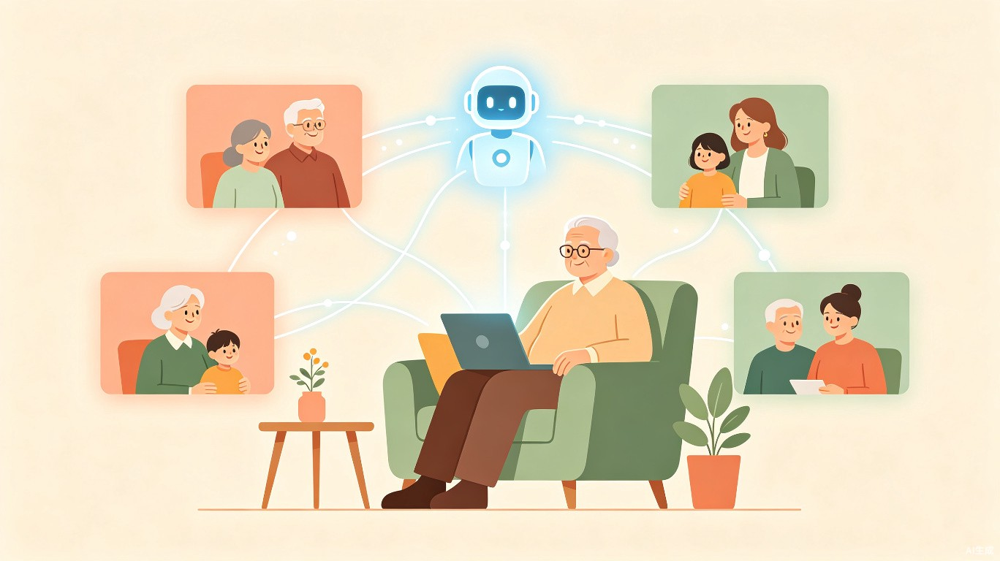
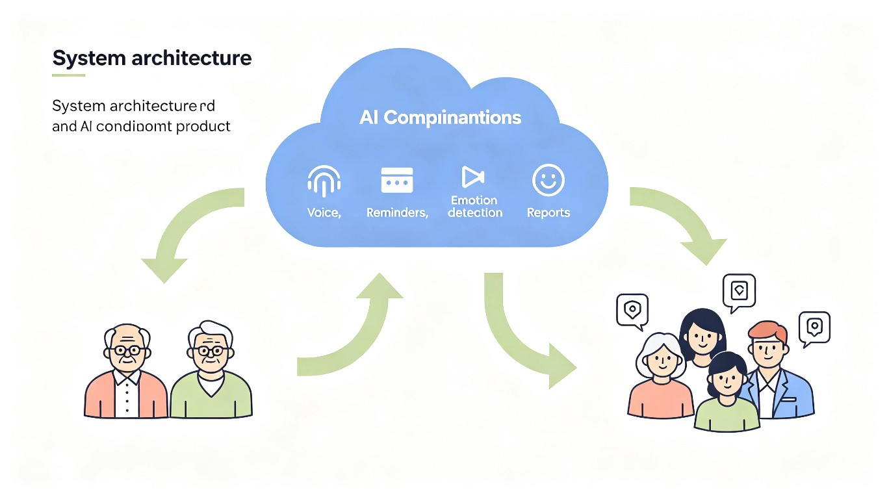
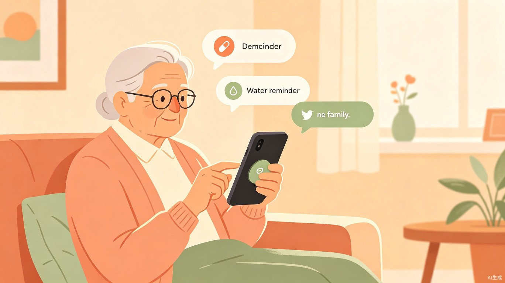
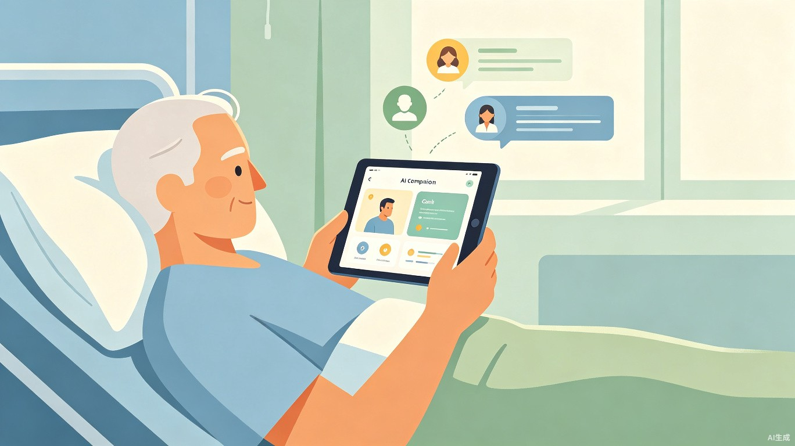
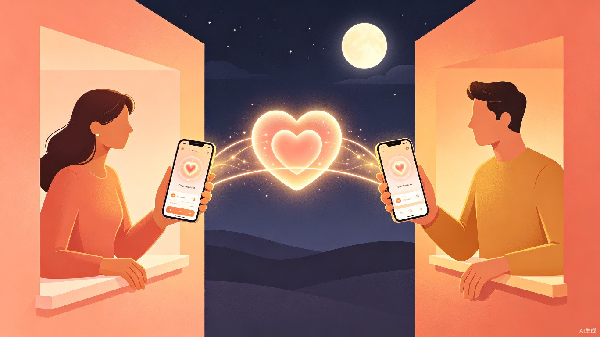

AI 远程陪伴与安全守护管家
一款面向远程关怀关系的 AI 陪伴管家，通过实时语音、云端提醒、AI 情绪陪聊和关怀报告，帮助老人、住院患者、异地情侣和异地亲友在无法面对面陪伴时，依然能够获得及时的陪伴与守护。

项目核心理念
AI 不替代陪伴，而是让远方的人更懂如何陪伴。
让 AI 成为亲密关系中的陪伴桥梁，在人不在身边的时候，把关心及时传过去。
覆盖智能家居、健康管理、陪伴服务、心理疗愈等场景，符合"日常生活创新陪伴"方向。
可叠加银发安全健康、青少年心理陪伴、关爱弱势群体等公益方向，提升作品社会价值。
伴在云端服务四类需要远程关怀的核心人群。产品采用"一套系统，多个场景"的设计，适配不同关系与需求。
| 场景 | 被陪伴者 | 陪伴者 | 主要需求 |
|---|---|---|---|
| 独居老人 | 父母、长辈 | 子女 | 健康提醒、安全守护、日常陪聊 |
| 住院陪护 | 住院患者 | 家属、朋友 | 情绪安抚、检查提醒、病情记录 |
| 异地恋 | 情侣双方 | 彼此 | 情感互动、陪伴任务、关系维护 |
| 异地亲友 | 外地求学/工作的人 | 家人、朋友 | 压力倾诉、生活关心、状态同步 |
优先级策略：第一阶段以独居老人和住院患者为主场景，体现照护刚需；异地情侣和亲友作为情感陪伴扩展模式。
伴在云端采用三端联动架构，通过 AI 云端智能层连接被陪伴者与陪伴者，实现全链路关怀闭环。

大按钮界面，一键语音联系、播放亲情留言、确认提醒、请求陪伴。支持语音输入与文字交互。
远程设置提醒事项、录制亲情语音、查看完成状态与关怀报告、接收异常提醒。
智能生成提醒内容、总结每日状态、识别情绪变化、推荐陪伴任务与关怀话术。
用户进入产品后可选择不同陪伴场景，AI 会根据场景调整语气、提醒内容和关怀策略。
| 模式 | 功能重点 |
|---|---|
| 老人守护模式 | 吃药提醒、喝水提醒、防诈骗提醒、异常未响应提醒 |
| 住院陪护模式 | 检查提醒、症状记录、情绪安抚、家属简报 |
| 异地恋陪伴模式 | 纪念日提醒、晚安问候、情绪感知、陪伴任务 |
| 亲友关怀模式 | 压力倾诉、生活提醒、近况摘要、关心话术生成 |
参考智能手表式陪伴方式，让陪伴不一定要打开 App 打字，一句话就能被听见。
不是冷冰冰的闹钟，而是带有关系温度的提醒。提醒来自具体的人，完成状态会同步给远方的陪伴者。
示例："爸，该吃药啦。女儿给你设置了提醒，吃完记得点一下已完成，她会安心很多。" — 这就是伴在云端提醒与普通闹钟的区别。
AI 会根据用户文字、语音或每日心情打卡判断情绪，并用不同方式回应，不是冷冰冰地回答问题，而是识别"用户此刻真正需要什么陪伴"。
| 用户状态 | AI 反应 |
|---|---|
| 孤独 | 主动陪聊，推荐轻松话题 |
| 焦虑 | 引导用户慢慢表达，提供呼吸放松建议 |
| 想念某人 | 帮用户生成想发给对方的话 |
| 疼痛/不舒服 | 提醒记录症状并联系家属或医护 |
| 情绪持续低落 | 建议联系真实亲友，必要时触发提醒 |
系统每天或每周生成一份简短的"云端关怀报告"，发给授权的陪伴者。把"陪伴"转化成可见、可追踪、可回应的关怀行动。
| 报告模块 | 示例内容 |
|---|---|
| 今日情绪 | "今天整体状态平稳，晚上有些想家。" |
| 陪伴记录 | "今天与 AI 互动 3 次，主要聊到睡眠和晚饭。" |
| 健康提醒 | "已完成喝水提醒，用药提醒待确认。" |
| 需要关注 | "用户提到夜间睡眠不佳，建议家属主动询问。" |
| 关怀建议 | "今晚可以发一句：今天辛苦了，我一直惦记着你。" |
AI 给远方的陪伴者推荐温柔的小任务，把陪伴从一句空话变成可执行的小行动。
| 场景 | 陪伴任务示例 |
|---|---|
| 陪伴老人 | "今晚给爸爸打 5 分钟电话，问问今天有没有出门散步。" |
| 陪伴患者 | "发一张今天路上看到的天空照片，让对方感受到生活还在流动。" |
| 异地恋 | "今晚一起听同一首歌，并互相发送一句晚安语音。" |
| 陪伴朋友 | "发一句不用对方立刻振作的安慰话。" |
很多人不是不关心，而是不知道怎么表达。AI 可以根据对方状态，生成更合适的话。
| 场景 | AI 生成内容 |
|---|---|
| 母亲住院 | "妈，我今天虽然不在你身边，但一直惦记着你。检查结束后告诉我一声，好吗？" |
| 异地恋对象很累 | "今天辛苦了，你不用马上开心起来，我只是想陪你把今天慢慢过完。" |
| 父亲独居 | "爸，今天吃得怎么样？晚上我有空，想听你讲讲今天发生的小事。" |
| 朋友低落 | "你不用一个人硬撑，我可以先听你说，不急着给答案。" |

子女在外地工作，父亲独居。伴在云端每天提醒父亲吃药、喝水，并陪他聊天。晚上系统生成关怀报告，提醒子女："父亲今天提到有点头晕，建议今晚打电话确认。"父亲也可以一键播放女儿预录的早安语音，完成吃药后点击确认，女儿端会收到"爸爸已确认吃药"的状态同步。

朋友住院，家人不能一直陪床。伴在云端帮患者记录疼痛等级、提醒检查时间，并在患者焦虑时进行 AI 安抚。系统建议家属发送一段语音："今天检查辛苦了，我一直在。"患者也可随时点击"陪我一下"，通知家属回拨。

情侣分隔两地，最近因为忙碌交流变少。伴在云端识别到一方连续几天情绪低落，推荐一个低压力陪伴任务："今晚一起听一首歌，然后互发一句晚安。"双方还可以设置互相的晚安语音包，在睡前自动播放对方的声音。
最现实、最有说服力的关怀闭环，7 步形成完整的远程陪伴体验：
家属设置：每天 20:00 吃药
家属录制亲情语音提醒
被陪伴者收到提醒并播放语音
点击"已完成"或语音回复
家属收到"已确认吃药"通知
多次未确认则提醒家属联系
AI 生成今日关怀报告与建议
同时覆盖老人、住院患者、异地情侣和异地亲友，一套系统适配多种关怀关系，而非仅限于老人场景。
AI 不只是陪用户聊天，而是帮助人与人之间更好地连接 — 生成关怀话术、推荐陪伴任务、同步状态。
AI 主动发送提醒、生成关怀报告、推荐陪伴行动，而不是等用户主动打开 App 才开始工作。
不只判断用户情绪，还指导陪伴者具体怎么做 — 推荐一句话、一个小任务、一个合适的时机。
伴在云端明确自己的能力边界，不做替代，只做辅助。
AI 替代亲人陪伴、AI 医疗诊断、AI 心理诊断、关系监控、过度依赖
陪伴记录、提醒辅助、关怀建议、状态同步、鼓励真实联系人介入
项目声明：伴在云端不做医疗诊断、不做心理诊断、不做关系评判，只做陪伴记录、提醒辅助和关怀建议。所有健康相关问题仅用于提醒就医，所有情绪相关问题仅用于建议联系可信任的人。
大模型即可实现
标准功能，易落地
基础交互，无难度
录制+播放，温度强
AI 总结能力
可先用语音输入模拟
用心境自评+AI总结
先做规则触发
用语音留言替代
做模拟界面原型
| 实现难度高的部分 | 更现实的替代方案 |
|---|---|
| 实时语音通话（需音视频通信能力） | 第一版改为语音留言 + AI 语音转文字 + 一键回拨提醒 |
| 智能手表硬件联动（开发周期长） | 做模拟手表端大按钮界面，答辩时说明可扩展到手表/手环/床旁屏 |
| AI 自动情绪识别与风险预警 | 改为用户心境自评 + AI 温和总结 + 规则提醒（如多次未确认触发通知） |
| 医疗场景判断 | 只做症状记录和提醒就医，不做诊断 |
落地路线：第一阶段做轻量 App/网页原型验证核心闭环（亲情语音 + 云端提醒 + 完成确认 + AI 关怀报告），不做真实硬件和实时通话。老人和住院患者为主场景，情侣和亲友为扩展模式。
温度最强，最容易展示。预录语音在合适时机播放，让提醒有人的温度。
实用性最强，老人、患者、儿童都需要。带关系温度，不是冷冰冰闹钟。
形成远程守护闭环的核心环节。确认后状态同步给陪伴者。
符合 AI 大赛主题，体现技术创新，支持文字和语音输入。
体现 AI 总结和建议能力，让陪伴从隐形变成可见。
比赛作品建议做 5 个核心页面原型，覆盖完整用户旅程：
| 页面 | 内容 | 说明 |
|---|---|---|
| 首页 | 产品名称、口号、选择陪伴对象 | 入口页面，体现品牌温度 |
| 场景选择页 | 老人守护、住院陪护、异地恋、亲友关怀 | 多模式切换的核心交互 |
| AI 陪伴页 | 聊天界面、情绪选择、安抚回复 | AI 核心能力的展示窗口 |
| 关怀报告页 | 今日情绪、提醒完成情况、关怀建议 | 陪伴者查看的核心页面 |
| 陪伴任务页 | AI 推荐的今日陪伴行动列表 | 创新点的集中展示 |
主口号
让陪伴不因距离缺席。
一键语音，定时关怀，AI 守护每一段远方的关系。
人在远方，关心在身旁。
AI 不替代爱，只让爱更及时。
项目简介
伴在云端是一款面向远程关怀关系的 AI 陪伴与安全守护管家，面向独居老人、住院患者、异地情侣和异地亲友等需要陪伴的人群。产品参考智能手表式的轻量陪伴方式，支持亲情语音、云端提醒、完成确认、AI 情绪陪聊、关怀报告和陪伴任务。它不是用 AI 替代真实陪伴，而是通过 AI 和智能终端联动，让远方的人能够更及时、更自然地表达关心，让陪伴不因距离缺席。
| 维度 | 评价 |
|---|---|
| 创意价值 | 较高，方向有温度，贴合社会公益 |
| 赛道匹配 | 较高，适合生活娱乐 + 社会公益 |
| 技术可行性 | 中等偏高，前提是先做软件原型 |
| 实现风险 | 中等，主风险在实时语音和硬件 |
| 建议路线 | 先做轻量 App/网页原型，不做真实硬件和实时通话 |